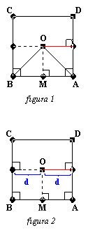
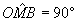
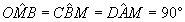
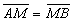
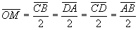

O fato do ponto M ser ponto médio do segmento AB é condição necessária e suficiente para que o segmento OM seja paralelo a duas das arestas da base da pirâmide.

Prova (condição necessária, figura 1):Sendo M ponto médio do segmento AB, então OM é altura do triângulo isósceles ABO e consequentemente é perpendicular ao segmento AB(veja figura à esquerda), ou seja,

.Mas: pois são ângulos internos de um quadrado.
Logo:

.Mas, no plano, se duas retas são perpendiculares a uma terceira então elas são paralelas entre si. Concluímos então que OM // BC // AD.
Prova (condição suficiente, figura 2):
Seja o segmento OM paralelo às aresta AD e BC do cubo. Temos, por construção, que O é o centro do quadrado ABCD, portanto qualquer ponto sobre o segmento OM está a uma mesma distância das arestas AD e BC(pois são paralelos); de onde concluímos que

, ou seja, M é ponto médio do segmento AB.
Uma conseqüência de OM // BC // AD é:
